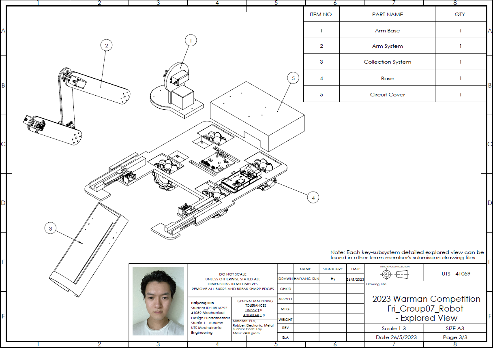
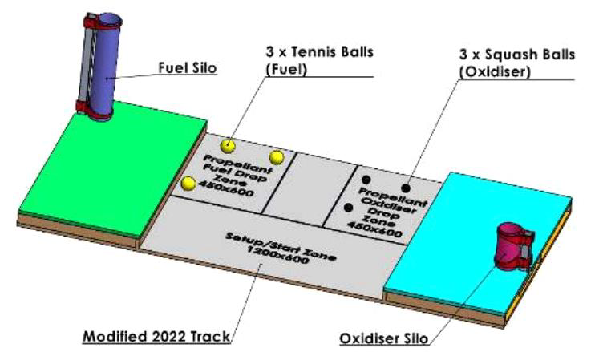
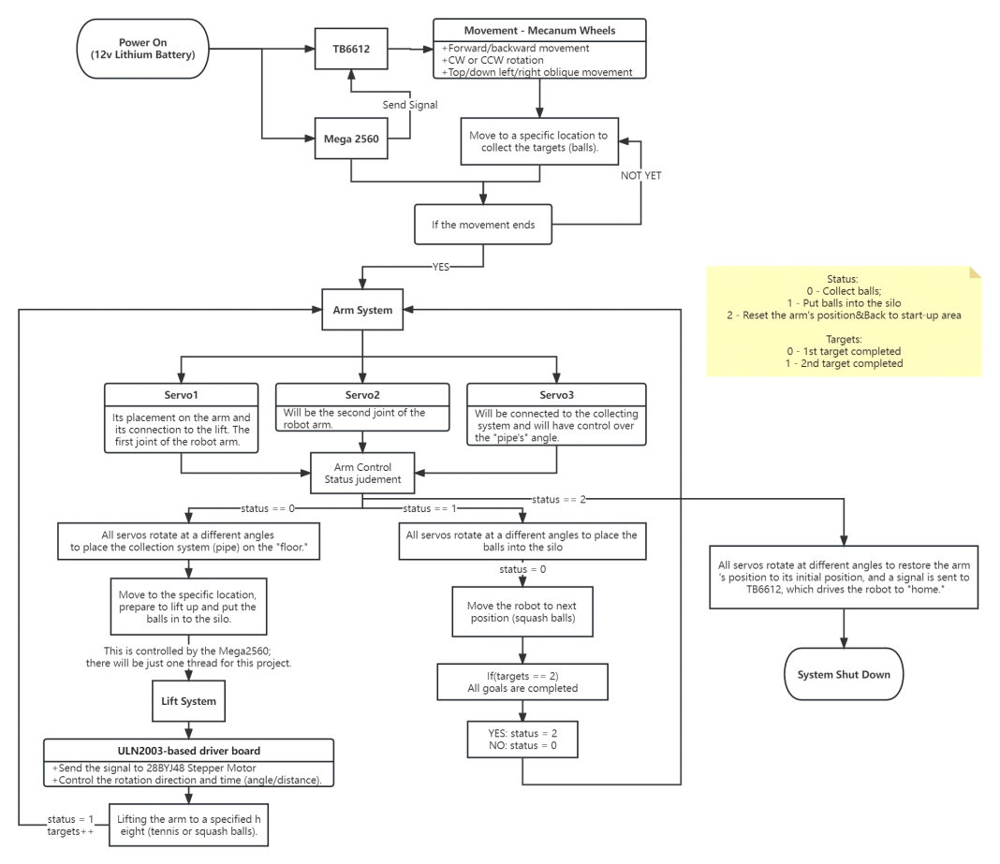
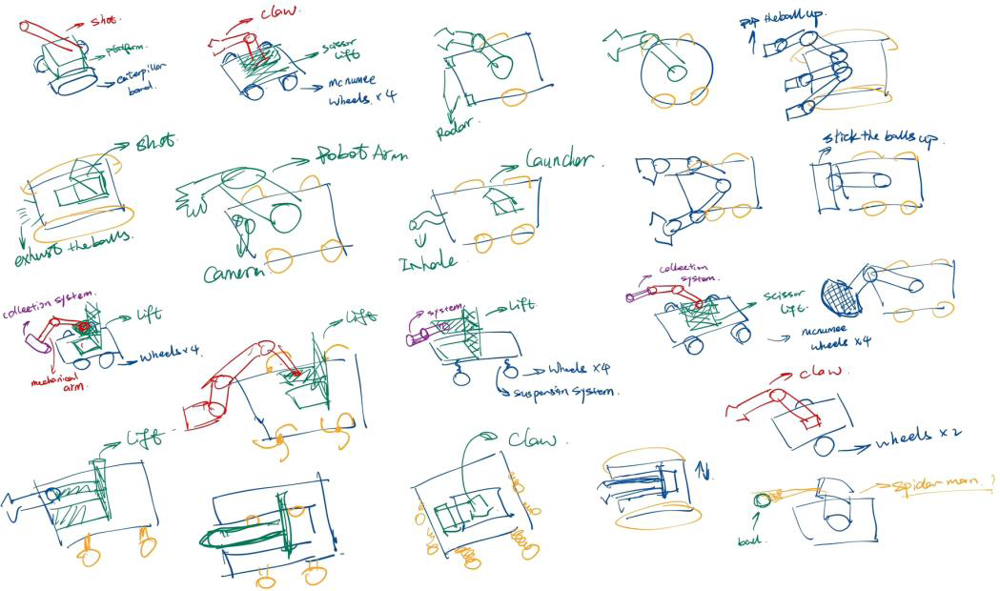
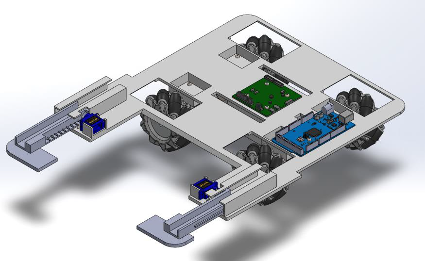
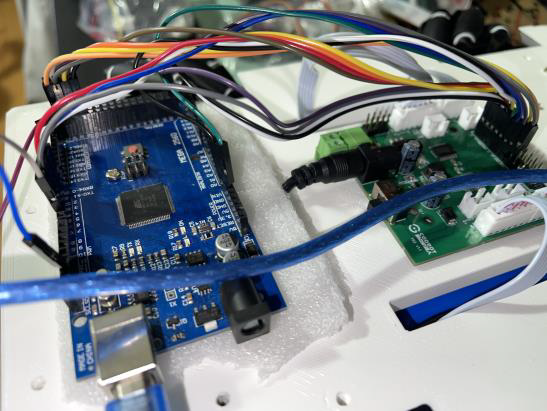
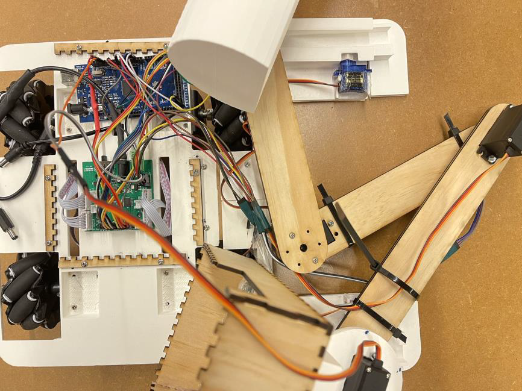

The 36th WARMAN Competition Robot Design & Integration
A competition-driven mechatronics robot designed for ball collection and silo placement, built under strict size, weight, and time constraints — led as team leader and lead programmer.

Problem
Design and build a robot under competition constraints to collect balls and place them into silos within a limited time.
My Role
Team leader, chassis designer, lead programmer — responsible for system architecture, component selection, integration, and competition execution.
Outcome
Integrated robot platform combining Mecanum mobile base, anti-rollover support, robotic arm extension, and coordinated embedded control logic.
Competition Context
The WARMAN Design & Build Competition challenges student teams to design, build, and operate a robot that collects tennis and squash balls and places them into silos of varying heights — all within strict limits on footprint, weight, and task time. The track layout required multi-directional mobility and precise arm placement.

System Overview
The final system combined a Mecanum-wheel mobile base for omnidirectional movement, a robotic arm for silo placement, a collection mechanism for ball intake, and extendable anti-rollover support to stabilise the robot during arm extension.

Requirement-Driven Design Process
Design decisions were guided by requirement analysis, morphological tables, and weighted scoring matrices. Criteria included chassis layout, support mechanism options, manufacturability, weight budget, cost, and stability under arm extension loads.
This structured process helped the team converge on design choices confidently rather than relying purely on intuition, and made trade-off decisions traceable during review.

Base and Anti-Rollover Mechanism
A major challenge was maintaining stability while the arm extended to reach high silos. The chassis incorporated anti-rollover protection that evolved into a deployable outrigger mechanism, improving stability at extension without violating the competition's size limits when retracted.
- Deployable outrigger that folds within footprint limits
- CG analysis to validate tipping margins at full arm extension
- SolidWorks FEA used to validate structural load paths

Embedded Control & Mecanum Drive
The robot was controlled via an Arduino Mega2560 with TB6612-based motor drivers. The control architecture handled Mecanum wheel kinematics, arm actuation sequencing, collection mechanism control, and coordinated task execution through modular embedded code.
- Mecanum wheel inverse kinematics for omnidirectional motion
- TB6612 dual H-bridge driver per motor pair
- State-machine task sequencing for competition routine
- Serial debug interface for pre-competition tuning

System Integration
Final integration brought together the mechanical structure, wiring harness, control electronics, and motion logic into a competition-ready system. Cable routing, connector selection, and power distribution were all iterated to survive repeated handling and the physical demands of competition runs.
This project strengthened my end-to-end mechatronics experience — from concept through manufacturing to hardware-software integration and live competition deployment.
